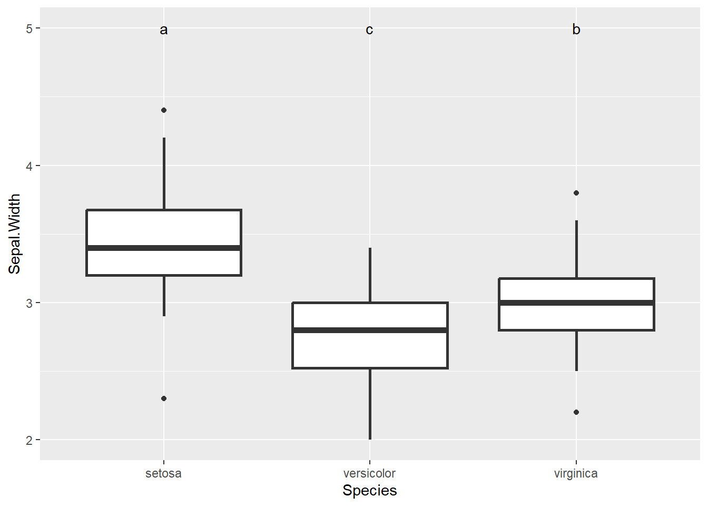
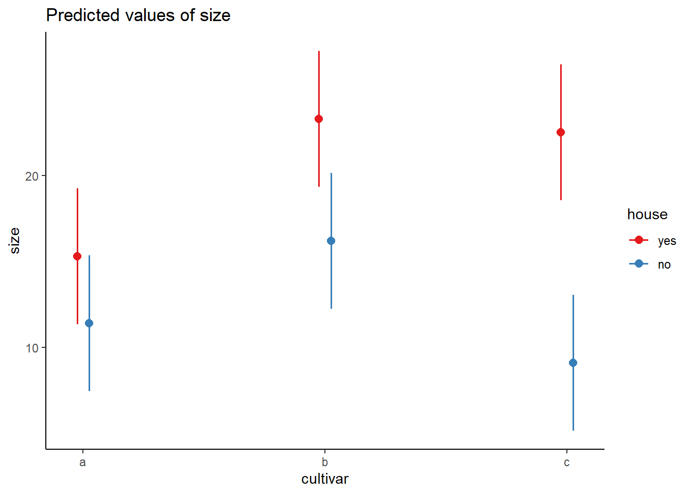
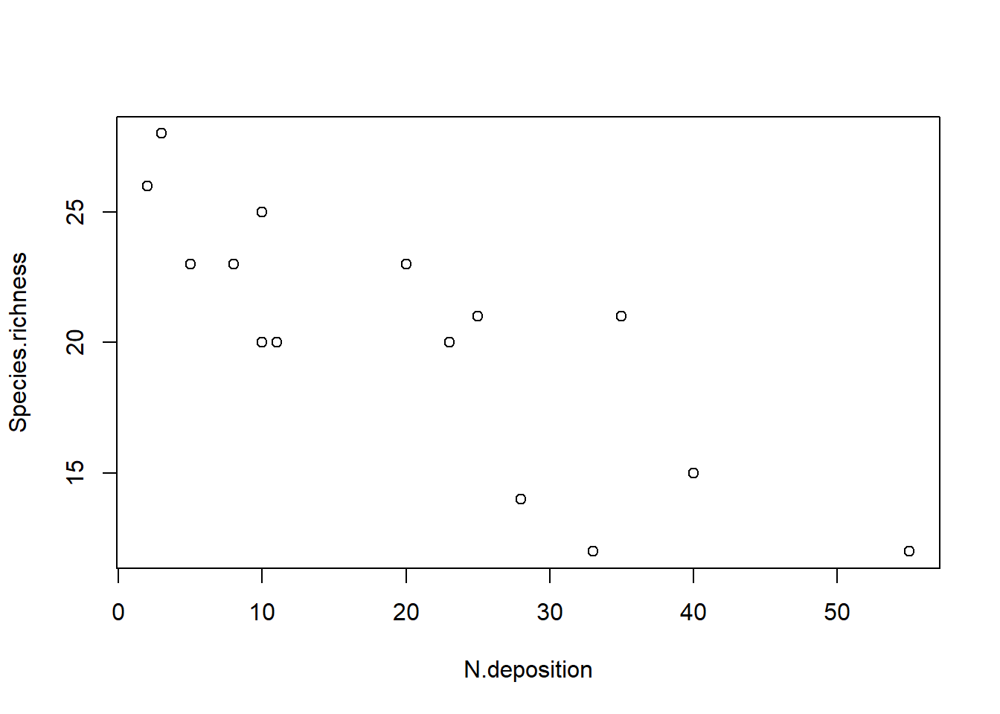

# Klassischer t-Test ausführent.test(size ~ cultivar, blume, var.equal =TRUE)## ## Two Sample t-test## ## data: size by cultivar## t = 2.0797, df = 18, p-value = 0.05212## alternative hypothesis: true difference in means between group a and group b is not equal to 0## 95 percent confidence interval:## -0.03981237 7.83981237## sample estimates:## mean in group a mean in group b ## 15.3 11.4# ANOVA ausführenaov(size ~ cultivar, data = blume)## Call:## aov(formula = size ~ cultivar, data = blume)## ## Terms:## cultivar Residuals## Sum of Squares 76.05 316.50## Deg. of Freedom 1 18## ## Residual standard error: 4.193249## Estimated effects may be unbalancedsummary(aov(size ~ cultivar, data = blume))## Df Sum Sq Mean Sq F value Pr(>F) ## cultivar 1 76.0 76.05 4.325 0.0521 .## Residuals 18 316.5 17.58 ## ---## Signif. codes: 0 '***' 0.001 '**' 0.01 '*' 0.05 '.' 0.1 ' ' 1summary.lm(aov(size ~ cultivar, data = blume))## ## Call:## aov(formula = size ~ cultivar, data = blume)## ## Residuals:## Min 1Q Median 3Q Max ## -7.300 -2.575 -0.350 2.925 9.700 ## ## Coefficients:## Estimate Std. Error t value Pr(>|t|) ## (Intercept) 15.300 1.326 11.54 9.47e-10 ***## cultivarb -3.900 1.875 -2.08 0.0521 . ## ---## Signif. codes: 0 '***' 0.001 '**' 0.01 '*' 0.05 '.' 0.1 ' ' 1## ## Residual standard error: 4.193 on 18 degrees of freedom## Multiple R-squared: 0.1937, Adjusted R-squared: 0.1489 ## F-statistic: 4.325 on 1 and 18 DF, p-value: 0.05212
Echte ANOVA
# Daten generieren mit 3 statt nur 2 Kategorienc <-c(30, 19, 31, 23, 18, 25, 26, 24, 17, 20)blume2 <-data.frame(cultivar =c(rep("a", 10), rep("b", 10), rep("c", 10)), size =c(a, b, c))blume2$cultivar <-as.factor(blume2$cultivar)summary(blume2)## cultivar size ## a:10 Min. : 7.00 ## b:10 1st Qu.:11.25 ## c:10 Median :15.50 ## Mean :16.67 ## 3rd Qu.:20.00 ## Max. :31.00head(blume2)## cultivar size## 1 a 20## 2 a 19## 3 a 25## 4 a 10## 5 a 8## 6 a 15par(mfrow =c(1, 1))boxplot(size ~ cultivar, xlab ="Sorte", ylab ="Blütengrösse [cm]", data = blume2)
aov(size ~ cultivar, data = blume2)## Call:## aov(formula = size ~ cultivar, data = blume2)## ## Terms:## cultivar Residuals## Sum of Squares 736.0667 528.6000## Deg. of Freedom 2 27## ## Residual standard error: 4.424678## Estimated effects may be unbalancedsummary(aov(size ~ cultivar, data = blume2))## Df Sum Sq Mean Sq F value Pr(>F) ## cultivar 2 736.1 368.0 18.8 7.68e-06 ***## Residuals 27 528.6 19.6 ## ---## Signif. codes: 0 '***' 0.001 '**' 0.01 '*' 0.05 '.' 0.1 ' ' 1summary.lm(aov(size ~ cultivar, data = blume2))## ## Call:## aov(formula = size ~ cultivar, data = blume2)## ## Residuals:## Min 1Q Median 3Q Max ## -7.300 -3.375 -0.300 2.700 9.700 ## ## Coefficients:## Estimate Std. Error t value Pr(>|t|) ## (Intercept) 15.300 1.399 10.935 2.02e-11 ***## cultivarb -3.900 1.979 -1.971 0.059065 . ## cultivarc 8.000 1.979 4.043 0.000395 ***## ---## Signif. codes: 0 '***' 0.001 '**' 0.01 '*' 0.05 '.' 0.1 ' ' 1## ## Residual standard error: 4.425 on 27 degrees of freedom## Multiple R-squared: 0.582, Adjusted R-squared: 0.5511 ## F-statistic: 18.8 on 2 and 27 DF, p-value: 7.683e-06aov.1<-aov(size ~ cultivar, data = blume2)summary(aov.1)## Df Sum Sq Mean Sq F value Pr(>F) ## cultivar 2 736.1 368.0 18.8 7.68e-06 ***## Residuals 27 528.6 19.6 ## ---## Signif. codes: 0 '***' 0.001 '**' 0.01 '*' 0.05 '.' 0.1 ' ' 1summary.lm(aov.1)## ## Call:## aov(formula = size ~ cultivar, data = blume2)## ## Residuals:## Min 1Q Median 3Q Max ## -7.300 -3.375 -0.300 2.700 9.700 ## ## Coefficients:## Estimate Std. Error t value Pr(>|t|) ## (Intercept) 15.300 1.399 10.935 2.02e-11 ***## cultivarb -3.900 1.979 -1.971 0.059065 . ## cultivarc 8.000 1.979 4.043 0.000395 ***## ---## Signif. codes: 0 '***' 0.001 '**' 0.01 '*' 0.05 '.' 0.1 ' ' 1## ## Residual standard error: 4.425 on 27 degrees of freedom## Multiple R-squared: 0.582, Adjusted R-squared: 0.5511 ## F-statistic: 18.8 on 2 and 27 DF, p-value: 7.683e-06# Berechnung Mittelwerte usw. zur Charakterisierung der Gruppenaggregate(size ~ cultivar, blume2, function(x) c(Mean =mean(x), SD =sd(x), Min =min(x), Max =max(x)))## cultivar size.Mean size.SD size.Min size.Max## 1 a 15.300000 5.207900 8.000000 25.000000## 2 b 11.400000 2.836273 7.000000 16.000000## 3 c 23.300000 4.854551 17.000000 31.000000lm.1<-lm(size ~ cultivar, data = blume2)summary(lm.1)## ## Call:## lm(formula = size ~ cultivar, data = blume2)## ## Residuals:## Min 1Q Median 3Q Max ## -7.300 -3.375 -0.300 2.700 9.700 ## ## Coefficients:## Estimate Std. Error t value Pr(>|t|) ## (Intercept) 15.300 1.399 10.935 2.02e-11 ***## cultivarb -3.900 1.979 -1.971 0.059065 . ## cultivarc 8.000 1.979 4.043 0.000395 ***## ---## Signif. codes: 0 '***' 0.001 '**' 0.01 '*' 0.05 '.' 0.1 ' ' 1## ## Residual standard error: 4.425 on 27 degrees of freedom## Multiple R-squared: 0.582, Adjusted R-squared: 0.5511 ## F-statistic: 18.8 on 2 and 27 DF, p-value: 7.683e-06
Tukeys Posthoc-Test
# Load librarylibrary("agricolae")## Error in library("agricolae"): there is no package called 'agricolae'# Posthoc-TestHSD.test(aov.1, "cultivar", group =FALSE, console =TRUE)## Error in HSD.test(aov.1, "cultivar", group = FALSE, console = TRUE): could not find function "HSD.test"
Beispiel Posthoc-Labels in Plot
# ANOVA Mit Iris-Datenset, das in R integriert istaov.2<-aov(Sepal.Width ~ Species, data = iris)# Posthoc-TestHSD.test(aov.2, "Species", console =TRUE)## Error in HSD.test(aov.2, "Species", console = TRUE): could not find function "HSD.test"# Plot mit labelsboxplot(Sepal.Width ~ Species, data = iris)
# Load librarylibrary("ggplot2")ggplot(iris, aes(Species, Sepal.Width)) +geom_boxplot(size =1) +annotate("text", y =5, x =1:3, label =c("a", "c", "b"))

Klassische Tests der Modellannahmen (NICHT EMPFOHLEN!!!)
# Shapiro-Wilk Test auf Normalverteilung# Pro Kategorie!# (H0 = Notmalverteilung)shapiro.test(blume2$size[blume2$cultivar =="a"])## ## Shapiro-Wilk normality test## ## data: blume2$size[blume2$cultivar == "a"]## W = 0.97304, p-value = 0.9175shapiro.test(blume2$size[blume2$cultivar =="b"])## ## Shapiro-Wilk normality test## ## data: blume2$size[blume2$cultivar == "b"]## W = 0.97341, p-value = 0.9206shapiro.test(blume2$size[blume2$cultivar =="c"])## ## Shapiro-Wilk normality test## ## data: blume2$size[blume2$cultivar == "c"]## W = 0.94188, p-value = 0.5742?var.test# F-Test zum Vergleich zweier Varianzen# (H0= Gleiche Varianzen)var.test( blume2$size[blume2$cultivar =="a"], blume2$size[blume2$cultivar =="b"])## ## F test to compare two variances## ## data: blume2$size[blume2$cultivar == "a"] and blume2$size[blume2$cultivar == "b"]## F = 3.3715, num df = 9, denom df = 9, p-value = 0.08467## alternative hypothesis: true ratio of variances is not equal to 1## 95 percent confidence interval:## 0.8374446 13.5738284## sample estimates:## ratio of variances ## 3.371547
# Load librarylibrary("car")# Test auf Homogenität der VarianzenleveneTest(blume2$size[blume2$cultivar =="a"], blume2$size[blume2$cultivar =="b"],center = mean)## Levene's Test for Homogeneity of Variance (center = mean)## Df F value Pr(>F) ## group 7 2.2598e+30 < 2.2e-16 ***## 2 ## ---## Signif. codes: 0 '***' 0.001 '**' 0.01 '*' 0.05 '.' 0.1 ' ' 1
Nicht-parametrische Alternativen, wenn Modellannahmen der ANVOA massiv verletzt sind
# Nicht-parametrische Alternative zu t-Testwilcox.test( blume2$size[blume2$cultivar =="a"], blume2$size[blume2$cultivar =="b"])## ## Wilcoxon rank sum test with continuity correction## ## data: blume2$size[blume2$cultivar == "a"] and blume2$size[blume2$cultivar == "b"]## W = 73, p-value = 0.08789## alternative hypothesis: true location shift is not equal to 0
Zum Vergleich normale ANOVA noch mal
summary(aov(size ~ cultivar, data = blume2))## Df Sum Sq Mean Sq F value Pr(>F) ## cultivar 2 736.1 368.0 18.8 7.68e-06 ***## Residuals 27 528.6 19.6 ## ---## Signif. codes: 0 '***' 0.001 '**' 0.01 '*' 0.05 '.' 0.1 ' ' 1
Bei starken Abweichungen von der Normalverteilung, aber ähnlichen Varianzen
Kruskal-Wallis-Test
kruskal.test(size ~ cultivar, data = blume2)## ## Kruskal-Wallis rank sum test## ## data: size by cultivar## Kruskal-Wallis chi-squared = 16.686, df = 2, p-value = 0.0002381
# Load librarylibrary("FSA")## Error in library("FSA"): there is no package called 'FSA'# korrigierte p-Werte nach Bejamini-HochbergdunnTest(size ~ cultivar, method ="bh", data = blume2)## Error in dunnTest(size ~ cultivar, method = "bh", data = blume2): could not find function "dunnTest"
Bei erheblicher Heteroskedastizität, aber relative normal/symmetrisch verteilten Residuen
Welch-Test
oneway.test(size ~ cultivar, var.equal = F, data = blume2)## ## One-way analysis of means (not assuming equal variances)## ## data: size and cultivar## F = 21.642, num df = 2.000, denom df = 16.564, p-value = 2.397e-05
2-faktorielle ANOVA
# Daten generierend <-c(10, 12, 11, 13, 10, 25, 12, 30, 26, 13)e <-c(15, 13, 18, 11, 14, 25, 39, 38, 28, 24)f <-c(10, 12, 11, 13, 10, 9, 2, 4, 7, 13)blume3 <-data.frame(cultivar =c(rep("a", 20), rep("b", 20), rep("c", 20)),house =c(rep(c(rep("yes", 10), rep("no", 10)), 3)),size =c(a, b, c, d, e, f))blume3## cultivar house size## 1 a yes 20## 2 a yes 19## 3 a yes 25## 4 a yes 10## 5 a yes 8## 6 a yes 15## 7 a yes 13## 8 a yes 18## 9 a yes 11## 10 a yes 14## 11 a no 12## 12 a no 15## 13 a no 16## 14 a no 7## 15 a no 8## 16 a no 10## 17 a no 12## 18 a no 11## 19 a no 13## 20 a no 10## 21 b yes 30## 22 b yes 19## 23 b yes 31## 24 b yes 23## 25 b yes 18## 26 b yes 25## 27 b yes 26## 28 b yes 24## 29 b yes 17## 30 b yes 20## 31 b no 10## 32 b no 12## 33 b no 11## 34 b no 13## 35 b no 10## 36 b no 25## 37 b no 12## 38 b no 30## 39 b no 26## 40 b no 13## 41 c yes 15## 42 c yes 13## 43 c yes 18## 44 c yes 11## 45 c yes 14## 46 c yes 25## 47 c yes 39## 48 c yes 38## 49 c yes 28## 50 c yes 24## 51 c no 10## 52 c no 12## 53 c no 11## 54 c no 13## 55 c no 10## 56 c no 9## 57 c no 2## 58 c no 4## 59 c no 7## 60 c no 13
boxplot(size ~ cultivar + house, data = blume3)
summary(aov(size ~ cultivar + house, data = blume3))## Df Sum Sq Mean Sq F value Pr(>F) ## cultivar 2 417.1 208.5 5.005 0.01 * ## house 1 992.3 992.3 23.815 9.19e-06 ***## Residuals 56 2333.2 41.7 ## ---## Signif. codes: 0 '***' 0.001 '**' 0.01 '*' 0.05 '.' 0.1 ' ' 1summary(aov(size ~ cultivar + house + cultivar:house, data = blume3))## Df Sum Sq Mean Sq F value Pr(>F) ## cultivar 2 417.1 208.5 5.364 0.0075 ** ## house 1 992.3 992.3 25.520 5.33e-06 ***## cultivar:house 2 233.6 116.8 3.004 0.0579 . ## Residuals 54 2099.6 38.9 ## ---## Signif. codes: 0 '***' 0.001 '**' 0.01 '*' 0.05 '.' 0.1 ' ' 1# Kurzschreibweise: "*" bedeutet, dass Interaktion zwischen cultivar und house eingeschlossen wirdsummary(aov(size ~ cultivar * house, data = blume3))## Df Sum Sq Mean Sq F value Pr(>F) ## cultivar 2 417.1 208.5 5.364 0.0075 ** ## house 1 992.3 992.3 25.520 5.33e-06 ***## cultivar:house 2 233.6 116.8 3.004 0.0579 . ## Residuals 54 2099.6 38.9 ## ---## Signif. codes: 0 '***' 0.001 '**' 0.01 '*' 0.05 '.' 0.1 ' ' 1summary.lm(aov(size ~ cultivar + house, data = blume3))## ## Call:## aov(formula = size ~ cultivar + house, data = blume3)## ## Residuals:## Min 1Q Median 3Q Max ## -9.733 -4.696 -1.050 2.717 19.133 ## ## Coefficients:## Estimate Std. Error t value Pr(>|t|) ## (Intercept) 9.283 1.667 5.570 7.52e-07 ***## cultivarb 6.400 2.041 3.135 0.00273 ** ## cultivarc 2.450 2.041 1.200 0.23509 ## houseyes 8.133 1.667 4.880 9.19e-06 ***## ---## Signif. codes: 0 '***' 0.001 '**' 0.01 '*' 0.05 '.' 0.1 ' ' 1## ## Residual standard error: 6.455 on 56 degrees of freedom## Multiple R-squared: 0.3766, Adjusted R-squared: 0.3432 ## F-statistic: 11.28 on 3 and 56 DF, p-value: 6.848e-06interaction.plot(blume3$cultivar, blume3$house, blume3$size)
anova(lm(blume3$size ~ blume3$cultivar * blume3$house), lm(blume3$size ~ blume3$cultivar + blume3$house))## Analysis of Variance Table## ## Model 1: blume3$size ~ blume3$cultivar * blume3$house## Model 2: blume3$size ~ blume3$cultivar + blume3$house## Res.Df RSS Df Sum of Sq F Pr(>F) ## 1 54 2099.6 ## 2 56 2333.2 -2 -233.63 3.0044 0.05792 .## ---## Signif. codes: 0 '***' 0.001 '**' 0.01 '*' 0.05 '.' 0.1 ' ' 1anova(lm(blume3$size ~ blume3$house), lm(blume3$size ~ blume3$cultivar * blume3$house))## Analysis of Variance Table## ## Model 1: blume3$size ~ blume3$house## Model 2: blume3$size ~ blume3$cultivar * blume3$house## Res.Df RSS Df Sum of Sq F Pr(>F) ## 1 58 2750.3 ## 2 54 2099.6 4 650.73 4.1841 0.005045 **## ---## Signif. codes: 0 '***' 0.001 '**' 0.01 '*' 0.05 '.' 0.1 ' ' 1# Visualisierung 2-fach-Interaktion etwas elaborierter mit ggplotlibrary("sjPlot")library("ggplot2")theme_set(theme_classic())aov <-aov(size ~ cultivar * house, data = blume3)plot_model(aov, type ="pred", terms =c("cultivar", "house"))

# Geht auch für 3-fach-Interaktionen# Datensatz zum Einfluss von Management und Hirschbeweidung auf den PflanzenartenreichtumRiesch <-read.delim("datasets/stat1-4/Riesch_et_al_ReMe_Extract.csv", sep =";", stringsAsFactors =TRUE)str(Riesch)## 'data.frame': 60 obs. of 5 variables:## $ Plot.ID : Factor w/ 60 levels "Eul_A1_MP_14",..: 9 17 33 37 49 10 18 34 38 50 ...## $ Year : Factor w/ 2 levels "Year 1","Year 4": 1 1 1 1 1 2 2 2 2 2 ...## $ Treatment : Factor w/ 3 levels "burnt","mown",..: 1 1 1 1 1 1 1 1 1 1 ...## $ Plot.type : Factor w/ 2 levels "fenced","open": 1 1 1 1 1 1 1 1 1 1 ...## $ Species.richness: int 45 49 44 52 43 37 42 36 46 38 ...aov.deer <-aov(Species.richness ~ Year * Treatment * Plot.type, data = Riesch)plot_model(aov.deer, type ="pred", terms =c("Year", "Treatment", "Plot.type"))
Korrelationen
## Korrelationen und Regressionen# Datensatz zum Einfluss von Stickstoffdepositionen auf den Pflanzenartenreichtumdf <-read.delim("datasets/stat1-4/Nitrogen.csv", sep =";")summary(df)## N.deposition Species.richness## Min. : 2.00 Min. :12.0 ## 1st Qu.: 9.00 1st Qu.:17.5 ## Median :20.00 Median :21.0 ## Mean :20.53 Mean :20.2 ## 3rd Qu.:30.50 3rd Qu.:23.0 ## Max. :55.00 Max. :28.0# Plotten der Beziehungplot(Species.richness ~ N.deposition, data = df)

# Daten anschauenscatterplot(Species.richness ~ N.deposition, data = df)
# Korrelationencor.test(df$Species.richness, df$N.deposition, method ="pearson")## ## Pearson's product-moment correlation## ## data: df$Species.richness and df$N.deposition## t = -5.2941, df = 13, p-value = 0.0001453## alternative hypothesis: true correlation is not equal to 0## 95 percent confidence interval:## -0.9405572 -0.5450218## sample estimates:## cor ## -0.8265238cor.test(df$N.deposition, df$Species.richness, method ="pearson")## ## Pearson's product-moment correlation## ## data: df$N.deposition and df$Species.richness## t = -5.2941, df = 13, p-value = 0.0001453## alternative hypothesis: true correlation is not equal to 0## 95 percent confidence interval:## -0.9405572 -0.5450218## sample estimates:## cor ## -0.8265238cor.test(df$Species.richness, df$N.deposition, method ="spearman")## ## Spearman's rank correlation rho## ## data: df$Species.richness and df$N.deposition## S = 1015.5, p-value = 0.0002259## alternative hypothesis: true rho is not equal to 0## sample estimates:## rho ## -0.8133721cor.test(df$Species.richness, df$N.deposition, method ="kendall")## ## Kendall's rank correlation tau## ## data: df$Species.richness and df$N.deposition## z = -3.308, p-value = 0.0009398## alternative hypothesis: true tau is not equal to 0## sample estimates:## tau ## -0.657115# Jetzt als Regressionlm <-lm(Species.richness ~ N.deposition, data = df)anova(lm) # ANOVA-Tabelle, 1. Möglichkeit## Analysis of Variance Table## ## Response: Species.richness## Df Sum Sq Mean Sq F value Pr(>F) ## N.deposition 1 233.91 233.908 28.028 0.0001453 ***## Residuals 13 108.49 8.346 ## ---## Signif. codes: 0 '***' 0.001 '**' 0.01 '*' 0.05 '.' 0.1 ' ' 1summary.aov(lm) # ANOVA-Tabelle, 2. Möglichkeit## Df Sum Sq Mean Sq F value Pr(>F) ## N.deposition 1 233.9 233.91 28.03 0.000145 ***## Residuals 13 108.5 8.35 ## ---## Signif. codes: 0 '***' 0.001 '**' 0.01 '*' 0.05 '.' 0.1 ' ' 1summary(lm) # Regressionskoeffizienten## ## Call:## lm(formula = Species.richness ~ N.deposition, data = df)## ## Residuals:## Min 1Q Median 3Q Max ## -4.9184 -1.9992 0.4493 2.0015 4.6081 ## ## Coefficients:## Estimate Std. Error t value Pr(>|t|) ## (Intercept) 25.60502 1.26440 20.251 3.25e-11 ***## N.deposition -0.26323 0.04972 -5.294 0.000145 ***## ---## Signif. codes: 0 '***' 0.001 '**' 0.01 '*' 0.05 '.' 0.1 ' ' 1## ## Residual standard error: 2.889 on 13 degrees of freedom## Multiple R-squared: 0.6831, Adjusted R-squared: 0.6588 ## F-statistic: 28.03 on 1 and 13 DF, p-value: 0.0001453# Signifikantes Ergebnis visualisierenplot(Species.richness ~ N.deposition, data = df)abline(lm)
Beispiele Modelldiagnostik
par(mfrow =c(2, 2)) # 4 Plots in einem Fensterplot(lm(b ~ a))